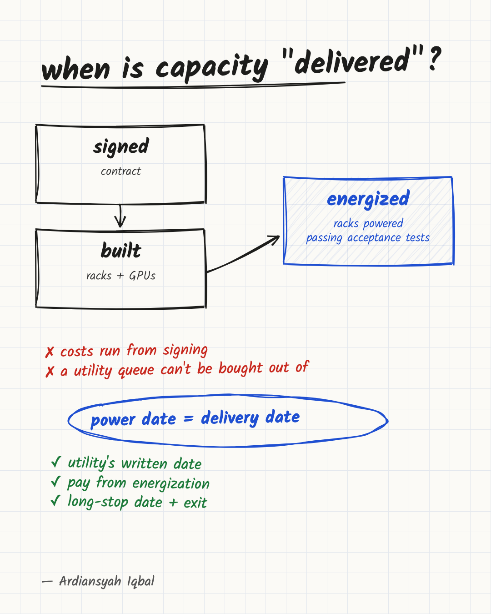

The power date is the delivery date for GPU capacity
Microsoft's exit from a UK site that could not get power shows why buyers of GPU capacity should contract for energization, not for racks.

Microsoft has ended its contract for Nscale's planned AI data center in Loughton, England. Data Center Knowledge reported on 19 October that a Microsoft spokesperson confirmed the termination, and that the cause was delay to the site's power connection. The project was announced in 2025 as a 50 MW campus that could grow to 90 MW, with 23,040 Nvidia GB300 GPUs planned for Azure.
According to The Guardian, as cited by Data Center Knowledge, UK Power Networks told Nscale it could not supply enough electricity to the site until the early to mid-2030s. A project like this could in principle be designed, financed and stocked with hardware and still deliver nothing for years, because the electricity supply it needs is not available on the plan's schedule. My proposal for anyone buying GPU capacity is a contracting rule: the power connection date is the delivery date. Not the signing date, not the hardware shipping date, not the "ready for service" date in a slide. The reporting does not disclose how the Loughton contract defined delivery, and I am not claiming Microsoft's contract used this definition. The case shows the exposure. It does not show that a particular clause would have prevented it.
After reading this you should be able to separate the steps between "contract signed" and "capacity serving traffic", ask the questions that expose where a provider's schedule depends on someone else, and choose among the protections a buyer can realistically get.
What is known, and what is not
The facts are thinner than the headlines. Two accounts exist, and they differ on one point.
The Next Web, published on 18 October, relays a Telegraph report, also cited by Bloomberg, that Microsoft had pulled out of anchoring Nscale's first British data center. The Telegraph did not say why, and Microsoft did not comment to it. Data Center Knowledge, a day later, states the cause as the power delay and quotes a confirmation of the termination from a Microsoft spokesperson. The grid problem was already public: TNW says it reported in July that the grid could not connect the site in time for its planned opening.
So the sequence is documented: a grid operator gives a connection date far beyond the plan, and an anchor customer ends its contract. Only Data Center Knowledge ties the two together. The Telegraph's account, as relayed by TNW, does not state the reason.
Nscale's public position, per Data Center Knowledge, is that it remains committed to Loughton, is exploring other power sources and other UK locations, and that the setback does not affect its other Microsoft contracts. Its spokesperson told the Telegraph the relationship with Microsoft "remains strong and long-term."
What neither company has disclosed matters just as much. Data Center Knowledge says there is no information on what Nscale spent on Loughton, whether termination payments apply, or what protections the contract contained. Nscale's IPO filing, per the same article, does not say how much financing or equipment spending was tied to this site. Anyone writing a confident story about who lost how much is guessing.
Energized is not the same as usable
Power has several stages, and a contract that names only one of them leaves gaps. Reading the Loughton case as "no power, no capacity" is right, but the reverse does not hold: power alone is not capacity either.
- Utility commitment. The operator has said, in writing, when it can supply a stated amount of power. At Loughton, this is the step that moved to the early to mid-2030s.
- Physical connection. The site is connected and the grid supplies the agreed capacity. This is what most people mean by "energized".
- Facility readiness. Cooling, distribution and the building itself can carry the load.
- Hardware in place. The racks are installed, powered and networked.
- Acceptance. The delivered cluster passes tests at the contracted size and performance.
- Service. The capacity is available to the customer under the agreed service levels.
A site can be at stage 2 with only part of its power, or at stage 4 with nodes that fail acceptance. That is why I would not write "delivery equals energization" and stop. Energization is the earliest date a delivery can happen, and the definition of service start should still require the later steps. The rule is a floor: no delivery date is credible before the power date, and the contract should say what has to be true after it.
Why a late connection costs so much
A grid connection is a separate dependency from everything else in a data center project, and it is the one the developer controls least. Alex Cordovil of Dell'Oro Group, quoted by Data Center Knowledge, put the economics in two lines: capacity that is not energized generates no revenue while the costs keep running, and contracted capacity is meaningless until it is energized capacity. Two details from the same article make the exposure sharper.
GPU hardware ages while it waits. Owen Rogers of Uptime Institute Intelligence noted that Nvidia now releases new GPU generations roughly yearly, which shortens the window in which a given generation earns its return. Older hardware can still serve inference and lighter workloads, so it is not worthless, but a plan priced on a specific generation earning for a specific number of years does not survive a long wait.
Delay does not need demand to fall. Neil Osnato of Persistence Analytics Group said the core problem is capital committed before the assumptions that justify recovering it are proven. Providers can lose money even when their GPUs remain useful: through delayed deployment, lower utilization, or revenue below the level the financing assumed. Cordovil's reading is similar: Loughton should not be taken as a sign that demand for AI infrastructure is weakening. Grid operators, he said, can revise connection timelines by six months to a year, sometimes more, while developers control customer wins and financing far more than utility timing.
A project that fails because nobody wants the compute is a demand problem. A project that slips because the grid connection is late is a schedule problem. In general the second kind can hurt a provider that has plenty of customers, though nothing reported shows that this has happened at Loughton.
Builders and buyers carry different risks
The same delay lands differently depending on where you sit.
For a hyperscaler, a delayed site is one item in a large and varied fleet. Data Center Knowledge notes that hyperscalers can absorb a delay across that fleet. A neocloud is often described as having concentrated customers, higher capital costs and GPU financing tied to specific deployments, so one late site is a larger share of the whole. If an anchor customer leaves, a replacement may recover only part of the original economics.
Nscale's own numbers show the concentration. Per TNW, citing its IPO filing, Microsoft and Anthropic account for about 85% of its contracts. In the filing as summarized by Data Center Knowledge, Nscale reports $103.4 billion in active and contracted total contract value as of 31 August 2026, against $2.6 billion in active contract value. Microsoft agreements provide for payments of up to $43.8 billion through December 2033, subject to delivery and service-availability requirements.
Those two contract-value figures are the filing's own categories, and they should be read with care. They show how much of Nscale's total contract value is already active and how much is still contracted, which is a large difference. They do not say which sites are energized, which are billing, or how much of the active figure depends on any one connection. The filing as summarized describes long-term take-or-pay arrangements, so contracted value is more than a vague hope. But it is value that depends on delivery, and the reporting does not publish the payment schedule. The "up to" and "subject to" wording tells us only that payments are conditional on delivery and service-availability requirements.
In the same filing, per Data Center Knowledge, Nscale had not secured binding financing for the GPU equipment and infrastructure needed for its Anthropic agreements as of the prospectus date. Between a contract and a billing cluster sit permits, construction, equipment, financing and a grid connection, each with its own date and its own chance of slipping.
For the buyer, the risk is different but real. A customer who has built a product plan, a hiring plan or a model-serving plan around a promised capacity start date inherits the delay without owning the site. The buyer cannot expedite a utility. What the buyer can do is decide, before signing, what the delay is worth and who pays for it.
What to put in a capacity contract
A contract for tens of megawatts needs lawyers, but the engineering questions are specific, and a buyer who can ask them is in a better position than one who accepts a start date at face value. Here is the list I would use.
- Ask what the utility has actually committed to. There is a large gap between an application, an accepted offer, and a signed connection agreement with energization dates. Ask which one exists today, and ask to see the operator's written date, not the developer's summary of it.
- Define the start date as usable capacity. "Service start" should mean racks powered and passing acceptance tests at stated capacity, not building completion or equipment delivery. Capacity that is installed but cannot be powered should not count.
- Tie payment and term to that definition. The disclosed Microsoft wording, payments subject to delivery and service-availability requirements, points in this direction, though the schedule behind it is not public. A buyer who prepays against a construction milestone takes on part of the delay risk, even if the contract mitigates it in other ways.
- Set a long-stop date and an exit. If service has not started by a named date, the buyer should be able to leave and recover what was prepaid. Without it, a delay of the Loughton kind leaves the buyer's capacity plan in limbo.
- Ask what the bridge plan is, and who pays for it. On-site generation can fill a power gap, but Data Center Knowledge notes it adds cost, permitting requirements and execution risk. Nscale says it is exploring alternative power sources for Loughton, and no result has been announced. A buyer should know whether a bridge is assumed in the price, who bears the overrun, and whether the bridge is itself permitted.
- Ask about the builder's balance sheet, not just the site. If one site fails and the builder depends on a few customers and project-tied financing, the question is whether the contract survives a bad quarter. Parent guarantees, escrow and step-in rights are the terms to ask about. They have costs: a builder with project-tied financing may not be able to post an escrow without raising its price, a parent guarantee is only as good as the parent, and step-in rights are hard to use when the problem is a utility, not an operator. Ask for them, and expect to trade some against price.
- Ask for a fallback location. Some capacity contracts allow substitution of an equivalent site. If the contract does not, the buyer has no remedy except exit.
When no firm date exists
Everything above assumes a date can be had. Often it cannot. A utility may not issue a firm energization date until late in the process, and a buyer who insists on one may be refused, or may pay for the insistence in price. The honest question is what to do in that case, and the options are not equal.
| Option | What it buys | What it costs | When it fits |
|---|---|---|---|
| Wait for a firm utility date | Certainty on the one date that matters | Time, and possibly the deal | Large, long-term commitments where the buyer cannot move |
| Staged delivery | Capacity arrives in tranches as each is energized, and payment follows each tranche | A smaller initial footprint and more contract complexity | Sites with phased power, such as a campus that can grow in steps |
| Interim capacity elsewhere | A usable cluster now, at a higher unit price | Premium pricing and a later migration | Launch dates that cannot move |
| Bridge power on site | Capacity before the grid arrives | Added cost, permitting and execution risk, per Data Center Knowledge | Where the provider already has a permitted plan and bears the overrun |
| Alternate site | Escape from one operator's queue | Network, data-location and procurement work | Workloads that are not tied to a place |
My preference, when a firm date is unavailable, is staged delivery with payment per tranche, backed by interim capacity for anything with a launch date. Staging limits how much of the contract rides on one connection. Interim capacity keeps the product schedule from depending on a utility. A bridge is attractive when the provider carries the cost and risk, and unattractive when the buyer does. Waiting for a firm date is right when the commitment is large enough that a late start is worse than a late signature.
None of this requires a prediction about AI demand. It requires treating power as a milestone with a date, an owner and a remedy, and being clear about which of those the buyer can actually obtain.
What the Loughton case does not show
It is easy to over-read a single termination, so here is the limit of the evidence.
It does not show that AI infrastructure demand is falling. The analysts quoted by Data Center Knowledge say that reading is wrong, and Nscale says other Microsoft contracts are unaffected. Microsoft, according to TNW, has signed a letter of intent for a West Virginia campus with Nscale.
It does not show that every neocloud is in trouble. TNW places the news next to a bad week for the sector: CoreWeave shares fell 25% in the week before, its worst since November, and Australia's Firmus scrapped its IPO after failing to win enough investor support. Those are context, not proof of a cause. Gartner, per Data Center Knowledge, separately warned that heavy AI infrastructure investment could be impaired if projected revenue does not materialize. That is a warning about a possible outcome, not a finding.
It does not show how much money anyone lost, as noted above. It does not show that the UK is uniquely bad. The mechanism is general: a grid operator's date is set by the grid, not by the project. Dell'Oro's point that timelines get revised by six months to a year, sometimes longer, is a statement about operators in general. Where a given operator stands is a question to ask site by site.
What it does show is narrower and, I think, more useful. A site with an anchor customer and a published capacity figure can fail to deliver on its planned grid connection and schedule, and the first public sign can be a utility's date. A buyer who relied on the build schedule rather than the connection schedule was relying on the wrong document.
Who should act on this
If you buy GPU capacity from a neocloud or a new site, whether as a company renting a cluster or as a team with a model-serving plan that depends on one, I would treat the energization date as a first-class term, ask for the utility's written commitment, and write an exit into the contract.
If you plan your own deployments, the practical shift is smaller and cheaper: keep a second source of capacity that is already energized, and do not commit launch dates to capacity that is not. A fallback you never use costs less than a launch you cannot make.
If you invest in or advise infrastructure builders, ask for the connection date before the order book. Contracted value tells you what customers agreed to buy. The utility's letter tells you when they can start receiving it.
My view is that this will matter more as AI capacity gets bought in larger blocks from newer providers. A contract whose delivery date rests on a third party's infrastructure is closer to a forecast than a supply, unless it carries a firm utility commitment, a remedy, or a second site.